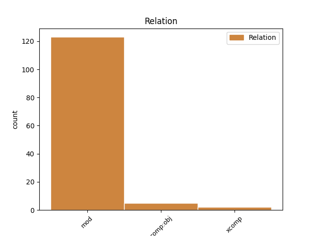
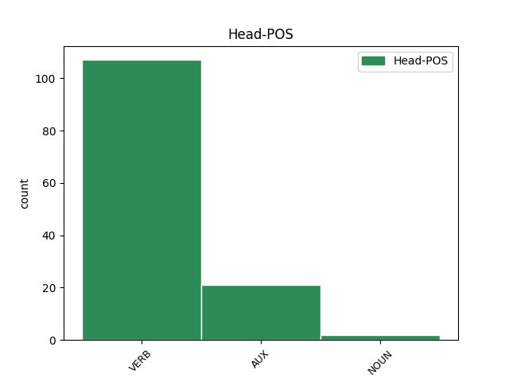
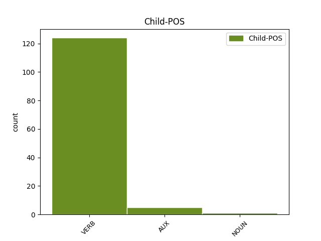

Distribution of features within this leaf



Agreement Rules sorted by frequency.
- When the dependent token is the modifer(mod) of the head token, and the head token is VERB and the dependent token is VERB.
1 Ябадалай _ _ _ _ 0 _ _ _
2 үрнил _ _ _ _ 0 _ _ _
3 Өөрынгөө _ _ _ _ 0 _ _ _
4 нүхэр _ _ _ _ 0 _ _ _
5 Энкидугэй _ _ _ _ 0 _ _ _
6 үхэлдэ _ _ _ _ 0 _ _ _
7 сошордоһон _ _ _ _ 0 _ _ _
8 Урукай _ _ _ _ 0 _ _ _
9 Гильгамеш _ _ _ _ 0 _ _ _
10 хаан _ _ _ _ 0 _ _ _
11 үхэшэгүй _ _ _ _ 0 _ _ _
12 мүнхын _ _ _ _ 0 _ _ _
13 эрэлдэ _ _ _ _ 0 _ _ _
14 Шумер _ _ _ _ 0 _ _ _
15 « _ _ _ _ 0 _ _ _
16 мүнөөнэй _ _ _ _ 0 _ _ _
17 Ирик _ _ _ _ 0 _ _ _
18 » _ _ _ _ 0 _ _ _
19 руу _ _ _ _ 0 _ _ _
20 ябаһан _ _ _ _ 0 _ _ _
21 Гильгамеш _ _ _ _ 0 _ _ _
22 сэсэн сэ VERB _ Mood=Ind|Number=Sing|Person=3|Tense=Past|VerbForm=Fin 30 mod _ _
23 мэргэн _ _ _ _ 0 _ _ _
24 бурханиие _ _ _ _ 0 _ _ _
25 туһаламжатайгаар _ _ _ _ 0 _ _ _
26 үерые _ _ _ _ 0 _ _ _
27 тэсбэрилэн _ _ _ _ 0 _ _ _
28 шадаһан _ _ _ _ 0 _ _ _
29 Утнапиштимтэй _ _ _ _ 0 _ _ _
30 уулзаһан уулзаһ VERB _ Mood=Ind|Number=Sing|Person=3|Tense=Past|VerbForm=Fin 0 _ _ _
31 . _ _ _ _ 0 _ _ _
1 Япон _ _ _ _ 0 _ _ _
2 улс _ _ _ _ 0 _ _ _
3 мүн _ _ _ _ 0 _ _ _
4 Солонгос _ _ _ _ 0 _ _ _
5 дахи _ _ _ _ 0 _ _ _
6 " _ _ _ _ 0 _ _ _
7 тусгай _ _ _ _ 0 _ _ _
8 эрхэ _ _ _ _ 0 _ _ _
9 ашагаа _ _ _ _ 0 _ _ _
10 " _ _ _ _ 0 _ _ _
11 Ородоор _ _ _ _ 0 _ _ _
12 зүвшөөрүүлээд _ _ _ _ 0 _ _ _
13 , _ _ _ _ 0 _ _ _
14 Манзуураар _ _ _ _ 0 _ _ _
15 дамжуулан _ _ _ _ 0 _ _ _
16 Ази _ _ _ _ 0 _ _ _
17 түбида _ _ _ _ 0 _ _ _
18 нүлөөгөө _ _ _ _ 0 _ _ _
19 ихэсгэжэ _ _ _ _ 0 _ _ _
20 байһан бай VERB _ Case=Nom|Tense=Past|VerbForm=Part 31 mod _ _
21 тул _ _ _ _ 0 _ _ _
22 Ород _ _ _ _ 0 _ _ _
23 улас _ _ _ _ 0 _ _ _
24 монголтой _ _ _ _ 0 _ _ _
25 хилэлэһэн _ _ _ _ 0 _ _ _
26 хилынхээ _ _ _ _ 0 _ _ _
27 дагуу _ _ _ _ 0 _ _ _
28 сэрэгын _ _ _ _ 0 _ _ _
29 ангиудаа _ _ _ _ 0 _ _ _
30 байрлуулһан _ _ _ _ 0 _ _ _
31 байлаа байл AUX _ Mood=Ind|Number=Sing|Person=3|Tense=Past|VerbForm=Fin 0 _ _ _
32 . _ _ _ _ 0 _ _ _
1 Тоорил _ _ _ _ 0 _ _ _
2 хан _ _ _ _ 0 _ _ _
3 Жадаран _ _ _ _ 0 _ _ _
4 аймагай _ _ _ _ 0 _ _ _
5 Жамухатай _ _ _ _ 0 _ _ _
6 хүсэн хү VERB _ Case=Nom|Tense=Past|VerbForm=Part 7 mod _ _
7 хабсаран хабса NOUN _ Case=Nom|Tense=Past|VerbForm=Part 0 _ _ _
8 Мэргид _ _ _ _ 0 _ _ _
9 аймагые _ _ _ _ 0 _ _ _
10 дайлан _ _ _ _ 0 _ _ _
11 Буур _ _ _ _ 0 _ _ _
12 хээртэ _ _ _ _ 0 _ _ _
13 бута _ _ _ _ 0 _ _ _
14 сохин _ _ _ _ 0 _ _ _
15 Тэмүүжэн _ _ _ _ 0 _ _ _
16 һамган _ _ _ _ 0 _ _ _
17 Бүртынгээ _ _ _ _ 0 _ _ _
18 эрюулэн _ _ _ _ 0 _ _ _
19 абаа _ _ _ _ 0 _ _ _
20 . _ _ _ _ 0 _ _ _
1 Шэхэрэй _ _ _ _ 0 _ _ _
2 Хуулинь _ _ _ _ 0 _ _ _
3 орлогын _ _ _ _ 0 _ _ _
4 хэмжээе _ _ _ _ 0 _ _ _
5 хангалтатай _ _ _ _ 0 _ _ _
6 ехэдхэжэ _ _ _ _ 0 _ _ _
7 шадахагүй _ _ _ _ 0 _ _ _
8 байһан байһ AUX _ Mood=Ind|Number=Sing|Person=3|Tense=Past|VerbForm=Fin 17 mod _ _
9 тула _ _ _ _ 0 _ _ _
10 Тамгын _ _ _ _ 0 _ _ _
11 Хуулиие _ _ _ _ 0 _ _ _
12 ( _ _ _ _ 0 _ _ _
13 ) _ _ _ _ 0 _ _ _
14 1765 _ _ _ _ 0 _ _ _
15 ондо _ _ _ _ 0 _ _ _
16 нэмэжэ _ _ _ _ 0 _ _ _
17 баталһан баталһ VERB _ Mood=Ind|Number=Sing|Person=3|Tense=Past|VerbForm=Fin 0 _ _ _
18 . _ _ _ _ 0 _ _ _
1 Тоорил _ _ _ _ 0 _ _ _
2 хан _ _ _ _ 0 _ _ _
3 Жадаран _ _ _ _ 0 _ _ _
4 аймагай _ _ _ _ 0 _ _ _
5 Жамухатай _ _ _ _ 0 _ _ _
6 хүсэн _ _ _ _ 0 _ _ _
7 хабсаран хабса NOUN _ Case=Nom|Tense=Past|VerbForm=Part 19 mod _ _
8 Мэргид _ _ _ _ 0 _ _ _
9 аймагые _ _ _ _ 0 _ _ _
10 дайлан _ _ _ _ 0 _ _ _
11 Буур _ _ _ _ 0 _ _ _
12 хээртэ _ _ _ _ 0 _ _ _
13 бута _ _ _ _ 0 _ _ _
14 сохин _ _ _ _ 0 _ _ _
15 Тэмүүжэн _ _ _ _ 0 _ _ _
16 һамган _ _ _ _ 0 _ _ _
17 Бүртынгээ _ _ _ _ 0 _ _ _
18 эрюулэн _ _ _ _ 0 _ _ _
19 абаа аб VERB _ Mood=Ind|Number=Sing|Person=3|Tense=Past|VerbForm=Fin 0 _ _ _
20 . _ _ _ _ 0 _ _ _
Disagree Examples:
1 1970 _ _ _ _ 0 _ _ _
2 ондо _ _ _ _ 0 _ _ _
3 Свердловскын _ _ _ _ 0 _ _ _
4 юристын _ _ _ _ 0 _ _ _
5 институт _ _ _ _ 0 _ _ _
6 « _ _ _ _ 0 _ _ _
7 хуули _ _ _ _ 0 _ _ _
8 ёһо _ _ _ _ 0 _ _ _
9 » _ _ _ _ 0 _ _ _
10 гэһэн гэһ AUX _ Case=Nom|Tense=Past|VerbForm=Part 12 mod _ _
11 мэргэжэлээр _ _ _ _ 0 _ _ _
12 дүүргэһэн дүүр VERB _ Mood=Ind|Number=Sing|Person=3|Tense=Aor|VerbForm=Fin 0 _ _ _
13 . _ _ _ _ 0 _ _ _
1 Абтаһан _ _ _ _ 0 _ _ _
2 үгэ _ _ _ _ 0 _ _ _
3 соо _ _ _ _ 0 _ _ _
4 түргэн _ _ _ _ 0 _ _ _
5 гү _ _ _ _ 0 _ _ _
6 , _ _ _ _ 0 _ _ _
7 али _ _ _ _ 0 _ _ _
8 удаан _ _ _ _ 0 _ _ _
9 аялганиие _ _ _ _ 0 _ _ _
10 бэшэхын _ _ _ _ 0 _ _ _
11 тула _ _ _ _ 0 _ _ _
12 үндэһэн _ _ _ _ 0 _ _ _
13 хэлэндэмнай _ _ _ _ 0 _ _ _
14 иимэ _ _ _ _ 0 _ _ _
15 омоним _ _ _ _ 0 _ _ _
16 ( _ _ _ _ 0 _ _ _
17 дүрсөөрөө _ _ _ _ 0 _ _ _
18 адли _ _ _ _ 0 _ _ _
19 үгэ _ _ _ _ 0 _ _ _
20 ) _ _ _ _ 0 _ _ _
21 байха бай VERB _ Gender=Neut|Mood=Ind|Number=Sing|Person=3|Polarity=Pos|Tense=Fut|VerbForm=Fin|Voice=Act 28 comp:obj _ _
22 гү _ _ _ _ 0 _ _ _
23 , _ _ _ _ 0 _ _ _
24 али _ _ _ _ 0 _ _ _
25 үгы _ _ _ _ 0 _ _ _
26 гү _ _ _ _ 0 _ _ _
27 гэжэ _ _ _ _ 0 _ _ _
28 мэдэхэ мэдэ VERB _ Mood=Ind|Number=Sing|Person=3|Tense=Aor|VerbForm=Fin 0 _ _ _
29 ёһотой _ _ _ _ 0 _ _ _
30 . _ _ _ _ 0 _ _ _
1 Адуунай _ _ _ _ 0 _ _ _
2 эртэнэй _ _ _ _ 0 _ _ _
3 үбгэ _ _ _ _ 0 _ _ _
4 Адуунай _ _ _ _ 0 _ _ _
5 эртэнэй _ _ _ _ 0 _ _ _
6 үбгэниинь _ _ _ _ 0 _ _ _
7 туулайрхуу _ _ _ _ 0 _ _ _
8 бэетэй _ _ _ _ 0 _ _ _
9 , _ _ _ _ 0 _ _ _
10 урда _ _ _ _ 0 _ _ _
11 хоёр _ _ _ _ 0 _ _ _
12 һарбуунь _ _ _ _ 0 _ _ _
13 дүрбэн _ _ _ _ 0 _ _ _
14 һалаа һала VERB _ Mood=Ind|Number=Sing|Person=3|Tense=Pres|VerbForm=Fin|Voice=Act 36 mod _ _
15 , _ _ _ _ 0 _ _ _
16 хойто _ _ _ _ 0 _ _ _
17 хоёр _ _ _ _ 0 _ _ _
18 һарбуунь _ _ _ _ 0 _ _ _
19 гурбан _ _ _ _ 0 _ _ _
20 һалаа _ _ _ _ 0 _ _ _
21 һарбуутай _ _ _ _ 0 _ _ _
22 хиракотериум _ _ _ _ 0 _ _ _
23 хэмээхэ _ _ _ _ 0 _ _ _
24 нэрэтэй _ _ _ _ 0 _ _ _
25 шүүһэлиг _ _ _ _ 0 _ _ _
26 ургамалаар _ _ _ _ 0 _ _ _
27 хооллодог _ _ _ _ 0 _ _ _
28 28 _ _ _ _ 0 _ _ _
29 - _ _ _ _ 0 _ _ _
30 56 _ _ _ _ 0 _ _ _
31 см _ _ _ _ 0 _ _ _
32 үндэртэй _ _ _ _ 0 _ _ _
33 жаахан _ _ _ _ 0 _ _ _
34 амитан _ _ _ _ 0 _ _ _
35 гэжэ _ _ _ _ 0 _ _ _
36 үзэдэг үзэ VERB _ Mood=Ind|Number=Sing|Person=3|Tense=Aor|VerbForm=Fin 0 _ _ _
37 . _ _ _ _ 0 _ _ _
1 Амидаралынхаа _ _ _ _ 0 _ _ _
2 һүүлэй _ _ _ _ 0 _ _ _
3 арбан _ _ _ _ 0 _ _ _
4 жэлэй _ _ _ _ 0 _ _ _
5 хугасаанда хугас VERB _ Case=Loc|Tense=Past|VerbForm=Ger 22 mod _ _
6 ниитэдээ _ _ _ _ 0 _ _ _
7 2000 _ _ _ _ 0 _ _ _
8 үлүү _ _ _ _ 0 _ _ _
9 бүтээл _ _ _ _ 0 _ _ _
10 туурбиһанай _ _ _ _ 0 _ _ _
11 дотор _ _ _ _ 0 _ _ _
12 900 _ _ _ _ 0 _ _ _
13 оршом _ _ _ _ 0 _ _ _
14 уран _ _ _ _ 0 _ _ _
15 зураг _ _ _ _ 0 _ _ _
16 , _ _ _ _ 0 _ _ _
17 1100 _ _ _ _ 0 _ _ _
18 зурааһан _ _ _ _ 0 _ _ _
19 зураг _ _ _ _ 0 _ _ _
20 , _ _ _ _ 0 _ _ _
21 ноорог _ _ _ _ 0 _ _ _
22 бүтээбэ бүтэ VERB _ Mood=Ind|Number=Sing|Person=3|Tense=Aor|VerbForm=Fin 0 _ _ _
23 . _ _ _ _ 0 _ _ _
1 Анха _ _ _ _ 0 _ _ _
2 Бразилиин _ _ _ _ 0 _ _ _
3 эзэнтэ _ _ _ _ 0 _ _ _
4 гүрэн _ _ _ _ 0 _ _ _
5 нэрэтэйгээр _ _ _ _ 0 _ _ _
6 тусгаарлаһан тусгаарла VERB _ Case=Nom|Tense=Past|VerbForm=Part 13 mod _ _
7 болон _ _ _ _ 0 _ _ _
8 1889 _ _ _ _ 0 _ _ _
9 онһоо _ _ _ _ 0 _ _ _
10 бүгэдэ _ _ _ _ 0 _ _ _
11 найрамдаха _ _ _ _ 0 _ _ _
12 улас _ _ _ _ 0 _ _ _
13 болоо бол AUX _ Gender=Neut|Mood=Ind|Number=Sing|Person=3|Polarity=Pos|Tense=Fut|VerbForm=Fin|Voice=Act 0 _ _ _
14 . _ _ _ _ 0 _ _ _